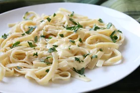

Alfredo pasta

spaghetti coated in alfredo sauce
Ingredients
- butter 3 tbsp
- flour 5 tbsp
- milk 2 cups
- mixed herbs
- pepper
- salt
- pasta 2 cups
Procedure
- Boil pasta until al-dante. Prevent Further cooking with ice cold water.
- Add butter to a pan. Sieve flour to prevent any clumps and add to the butter while whisking
- When the flour begins to golden gradually pour milf while whisking
- Season with required amount of herbs and pepper
- Garnish with parmesan and serve hot